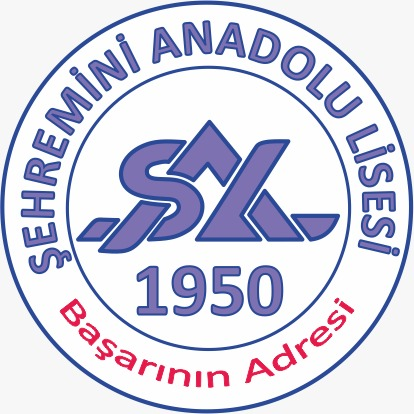

Education
University of Southern California — Ph.D. Astronautical Engineering
- 3.90/4.00 GPA
- Advisor: Garrett E. Reisman, PhD (former NASA Astronaut)
- Dissertation: The Investment Construct for Human Autonomy Teaming and Task Execution Support for Deep Space Habitats
University of Southern California — M.S. Astronautical Engineering
- 3.92/4.00 GPA
- Extracurricular: USC Liquid Propulsion Laboratory (LPL) & USC Space Engineering Research Center (SERC)
Istanbul Technical University — B.S. Astronautical Engineering
- 3.70/4.00 GPA
- Advisors: Cuma Yarım, PhD & Seher Eken, PhD
- Thesis: Artificial Gravity Express (AGE): Design of Tethered Space Vehicle with Artificial Gravity
- Extracurricular: AIAA Space Mission Design Team, MATE ROV Team, URC ROVER Team, and Hyperloop Team

Sehremini Anatolian High School
- Extracurricular: High School Basketball Team (Captain 2011-2013)